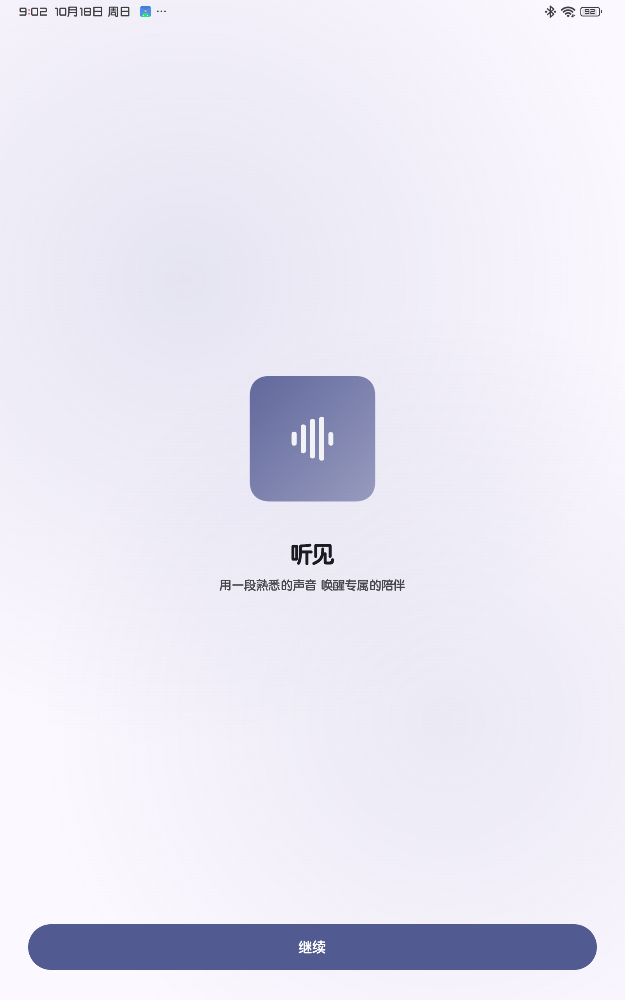
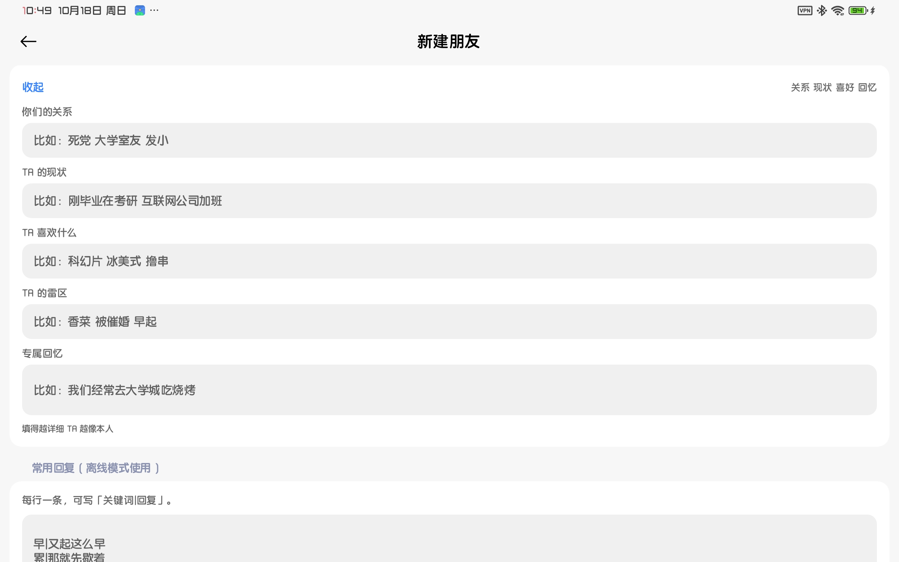
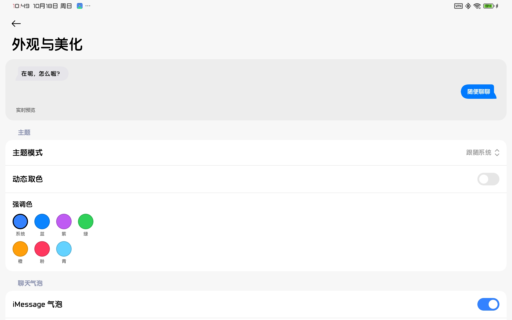
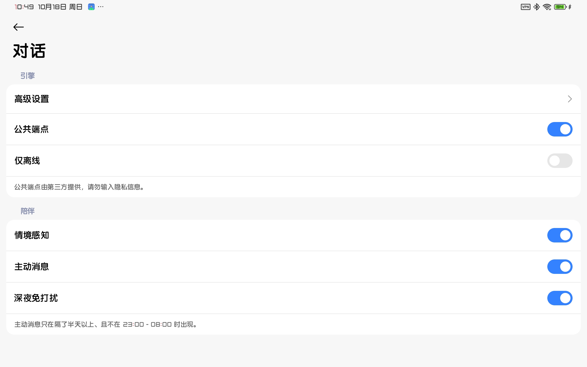
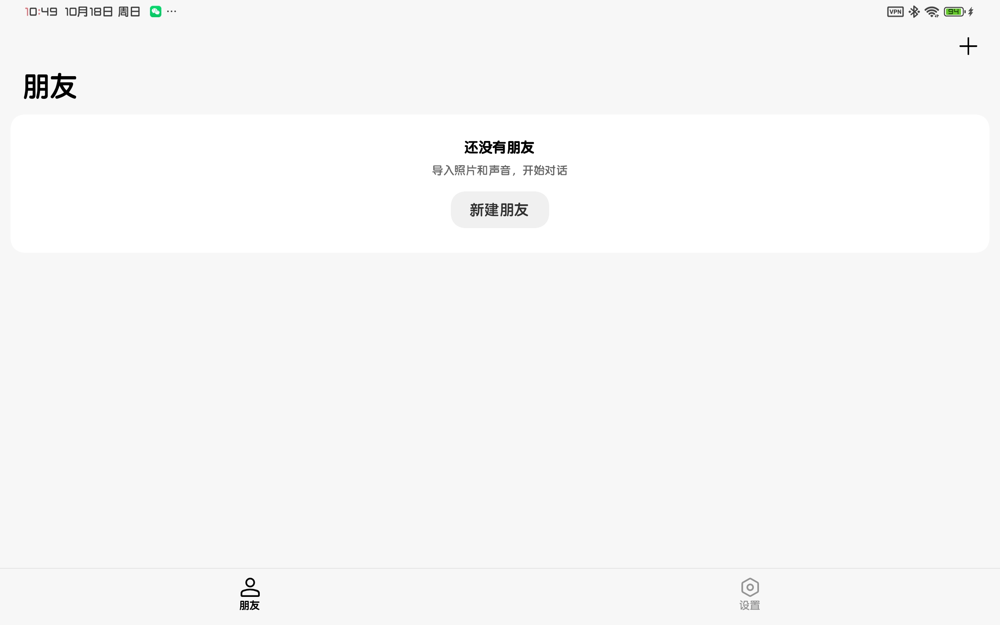

一款可以让你跟朋友对话的简易聊天工具
导入一张照片 一段声音 就能和一个像 TA 的朋友继续聊下去
不填 API Key 也能聊。自备 Key 优先，没有就走公共端点，再不行切本地预设，全程不打扰你。
关系 现状 性格 口头禅 喜好 雷区 专属回忆，都会拼进提示词。说到雷区会真的有情绪。
最近上下文和长期记忆分层保存，聊久了自动压成回忆，还有好感度和心境。
iMessage 连续曲率气泡与泪滴尾巴、共享元素转场、弹簧动画、分级触感。
聊天记录加密保存，照片与录音不出设备，可以一键备份或彻底清除。
GPL-3.0，Kotlin + Jetpack Compose，代码全在 GitHub。





不用。默认走免费的公共端点，自己填 Key 只是让回复更像人，不填也照样能聊。
能。网络不可用时会自动切到本机预设话术，聊天不会中断，也不会弹报错。
照片、录音、聊天记录都只在本机，记录本身是加密保存的。只有对话文本会发给对话端点。
可以，外观里能切成计算器或备忘录，图标变了但数据不动。
FriendSim is an open-source Android chat app that lets you keep talking to someone you miss. Add a photo, a few seconds of their voice, and structured persona details — the relationship, how they speak, what they love and hate — and the conversation starts to sound like them. It works without an API key, falls back to fully offline replies when the network is gone, and keeps all chats encrypted on device. Built with Kotlin and Jetpack Compose, licensed under GPL-3.0.